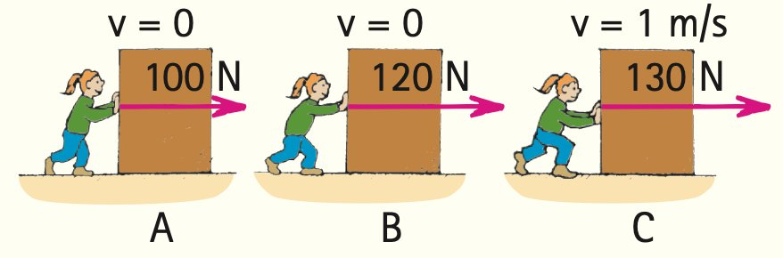
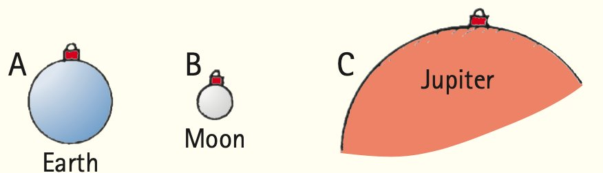
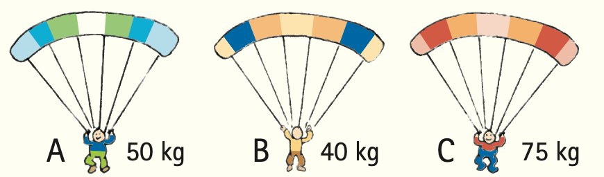

Summary of Terms (Knowledge)
- Force
- Any push or pull exerted on an object, measured in newtons (or pounds in the British system).
- Friction
- The resistive force that opposes the motion or attempted motion of an object either past another object with which it is in contact or through a fluid.
- Mass
- The quantity of matter in an object. More specifically, it is the measure of the inertia or sluggishness that an object exhibits in response to any effort made to start it, stop it, deflect it, or change in any way its state of motion.
- Weight
- The force upon an object due to gravity, mg. (More generally, the force that an object exerts on a means of support.)
- Kilogram
- The fundamental SI unit of mass. One kilogram (symbol kg) is the mass of 1 liter (1 L) of water at 4°C.
- Newton
- The SI unit of force. One newton (symbol N) is the force that will give an object of mass 1 kg an acceleration of 1 m/s2.
- Volume
- The quantity of space an object occupies.
- Newton’s second law
- The acceleration of an object is directly proportional to the net force acting on the object, is in the direction of the net force, and is inversely proportional to the mass of the object.
- Free fall
- Motion under the influence of gravitational pull only.
- Terminal speed
- The speed at which the acceleration of a falling object terminates because air resistance balances gravitational force.
- Terminal velocity
- Terminal speed with direction specified.
Reading Check Questions (Comprehension)
4.1 Force Causes Acceleration
- Is acceleration proportional to net force, or does acceleration equal net force?
4.2 Friction
- When you push horizontally on a crate on a level floor that doesn’t slide, how great is the force of friction on the crate?
- As you increase your push, will friction on the crate increase also?
- Once the crate is sliding, how hard do you push to keep it moving at constant velocity?
- Which is normally greater: static friction or sliding friction on the same object?
- How does the force of friction for a sliding object vary with speed?
- Does fluid friction vary with speed?
4.3 Mass and Weight
- Which is more fundamental: mass or weight? Which varies with location?
- Fill in the blanks: Shake something to and fro and you’re measuring its ________. Lift it against gravity and you’re measuring its ________.
- Fill in the blanks: The Standard International unit for mass is the ________. The Standard International unit for force is the ________.
- What is the approximate weight of a quarter-pound hamburger after it is cooked?
- What is the weight of a 1-kilogram brick resting on a table?
- In the string-pull illustration in Figure 4.8, a gradual pull of the lower string results in the top string breaking. Does this occur because of the ball’s weight or its mass?
- In the string-pull illustration in Figure 4.8, a sharp jerk on the bottom string results in the bottom string breaking. Does this occur because of the ball’s weight or its mass?
- Is acceleration directly proportional to mass, or is it inversely proportional to mass? Give an example.
4.4 Newton’s Second Law of Motion
- State Newton’s second law of motion.
- If we say that one quantity is directly proportional to another quantity, does this mean they are equal to each other? Explain briefly, using mass and weight as an example.
- If the net force acting on a sliding block is somehow tripled, what happens to the acceleration?
- If the mass of a sliding block is tripled while a constant net force is applied, by how much does the acceleration change?
- If the mass of a sliding block is somehow tripled at the same time the net force on it is tripled, how does the resulting acceleration compare with the original acceleration?
- How does the direction of acceleration compare with the direction of the net force that produces it?
4.5 When Acceleration Is g—Free Fall
- What is the condition for an object experiencing free fall?
- The ratio circumference/diameter for all circles is π. What is the ratio force/mass for freely falling bodies?
- Why doesn’t a heavy object accelerate more than a light object when both are freely falling?
4.6 When Acceleration Is Less Than g—Nonfree Fall
- What is the net force that acts on a 10-N freely falling object?
- What is the net force that acts on a 10-N falling object when it encounters 4 N of air resistance? 10 N of air resistance?
- What two principal factors affect the force of air resistance on a falling object?
- What is the acceleration of a falling object that has reached its terminal velocity?
- Why does a heavy parachutist fall faster than a lighter parachutist who wears a parachute of the same size?
- If two objects of the same size fall through the air at different speeds, which encounters the greater air resistance?
Think and Do (Hands-on Application)
- Write a letter to Grandma and tell her what you’ve learned about Galileo, introducing the concepts of acceleration and inertia. State that he was familiar with forces but didn’t see their connection to acceleration and mass. Tell her how Isaac Newton did see the connection and how it explains why heavy and light objects in free fall gain the same speed in the same time. In this letter, it’s okay to use an equation or two, as long as you make it clear to Grandma that an equation is a shorthand notation of ideas you’ve explained.
- Drop a sheet of paper and a coin at the same time. Which reaches the ground first? Why? Now crumple the paper into a small, tight wad and again drop it with the coin. Explain the difference observed. Will they fall together if dropped from a second-, third-, or fourth-story window? Try it and explain your observations.
- Drop a book and a sheet of paper, and you’ll see that the book has a greater acceleration—g. Repeat, but place the paper beneath the book so that it is forced against the book as both fall, so both fall equally at g. How do the accelerations compare if you place the paper on top of the raised book and then drop both? You may be surprised, so try it and see. Then explain your observation.
- Drop two balls of different masses from the same height, and, at low speeds, they practically fall together. Will they roll together down the same inclined plane? If each is suspended from an equal length of string, making a pair of pendulums, and displaced through the same angle, will they swing back and forth in unison? Try it and see; then explain using Newton’s laws.
- The net force acting on an object and the resulting acceleration are always in the same direction. You can demonstrate this with a spool. If the spool is gently pulled horizontally to the right, in which direction will it roll?

Plug and Chug (Equation Familiarization)
Make these simple one-step calculations and familiarize yourself with the equations that link the concepts of force, mass, and acceleration.
Weight = mg
- Calculate the weight in newtons of a person who has a mass of 50 kg.
- Calculate the weight in newtons of a 2000-kg elephant.
- Calculate the weight in newtons of a 2.5-kg melon. What is its weight in pounds?
- A small apple weighs about 1 N. What is its mass in kilograms? What is its weight in pounds?
- Susie Small finds that she weighs 300 N. Calculate her mass.
Acceleration: a = Fnet / m
- Calculate the acceleration of a 2000-kg, single-engine airplane as it begins its takeoff with an engine thrust of 500 N. (The unit N/kg is equivalent to m/s2.)
- Calculate the acceleration of a 300,000-kg jumbo jet just before takeoff when the thrust on the aircraft is 120,000 N.
- Consider a 40-kg block of cement that is pulled sideways with a net force of 200 N. Show that its acceleration is 5 m/s2.
- In Chapter 3 acceleration is defined as a = Δv / Δt. Show that the acceleration of a cart on an inclined plane that gains 6.0 m/s every 1.2 s is 5.0 m/s2.
- In this chapter we learn that the cause of acceleration is given by Newton’s second law: a = Fnet / m. Show that the acceleration in the preceding problem results from a net force of 15 N exerted on a 3.0-kg cart.
- Knowing that a 1-kg object weighs 10 N, confirm that the acceleration of a 1-kg stone in free fall is 10 m/s2.
- A simple rearrangement of Newton’s second law gives Fnet = ma. Show that a net force of 84 N exerted on a 12-kg package is needed to produce an acceleration of 7.0 m/s2.
Think and Solve (Mathematical Application)
- One pound is the same as 4.45 newtons. What is the weight in pounds of 1 newton?
- If Lillian weighs 500 N, what is her weight in pounds?
- Consider a mass of 1 kg accelerated 1 m/s2 by a force of 1 N. Show that the acceleration would be the same for a force of 2 N acting on 2 kg.
- Consider a business jet of mass 30,000 kg in takeoff when the thrust for each of its two engines is 30,000 N. Show that its acceleration is 2 m/s2.
- Alex, who has a mass of 100 kg, is skateboarding at 9.0 m/s when he smacks into a brick wall and comes to a dead stop in 0.2 s.
- Show that his deceleration is 45 m/s2.
- Show that the force of impact is 4500 N. (Ouch!)
- A rock band’s tour bus, mass M, is accelerating away from a stop sign at rate a when a piece of heavy metal, mass M/5, falls onto the top of the bus and remains there.
- Show that the bus’ acceleration is now 5/6a.
- If the initial acceleration of the bus is 1.2 m/s2, show that when the bus carries the heavy metal with it, the acceleration will be 1.0 m/s2.
Think and Rank (Analysis)
- Boxes of various masses are on a friction-free, level table. Rank each of the following from greatest to least:
- Net forces on the boxes
- Accelerations of the boxes

- In all three cases, A, B, and C, the crate is in equilibrium (no acceleration). Rank them by the amounts of friction between the crate and the floor, from greatest to least.

- A 100-kg box of tools is in the locations A, B, and C. From greatest to least, rank the
- masses of the 100-kg box of tools.
- weights of the 100-kg box of tools.

- Three parachutists, A, B, and C, each have reached terminal velocity at the same distance above the ground below.
- From fastest to slowest, rank their terminal velocities.
- From longest to shortest, rank their times to reach the ground.

Think and Explain (Synthesis)
- You exert a force on a ball when you toss it upward. How long does that force last after the ball leaves your hand?
- On a long alley, a bowling ball slows down as it rolls. Is any horizontal force acting on the ball? How do you know?
- If a motorcycle moves with a constant velocity, can you conclude that there is no net force acting on it? How about if it’s moving with constant acceleration?
- Since an object weighs less on the surface of the Moon than on Earth’s surface, does it have less inertia on the Moon’s surface?
- Which contains more apples: a 1-pound bag of apples on Earth or a 1-pound bag of apples on the Moon? Which contains more apples: a 1-kilogram bag of apples on Earth or a 1-kilogram bag of apples on the Moon?
- If gold were sold by weight, would you rather buy it in Denver or in Death Valley? If it were sold by mass, which of these locations makes the best buy? Defend your answers.
- In an orbiting space vehicle, you are handed two identical boxes, one filled with sand and the other filled with feathers. How can you determine which is which without opening the boxes?
- Your empty hand is not hurt when it bangs lightly against a wall. Why does it hurt if you’re carrying a heavy load? Which of Newton’s laws is most applicable here?
- Does the mass of an astronaut change when he or she is visiting the International Space Station? Defend your answer.
- Why is a massive cleaver more effective for chopping vegetables than an equally sharp knife?
- When a junked car is crushed into a compact cube, does its mass change? Its weight? Explain.
- Gravity on the surface of the Moon is only 1/6 as strong as gravity on Earth. What is the weight of a 10-kg object on the Moon and on Earth? What is its mass on each?
- What happens to the weight reading on a scale you stand on when you toss a heavy object upward?
- What weight change occurs when your mass increases by 2 kg?
- What is your own mass in kilograms? Your weight in newtons?
- A grocery bag can withstand 300 N of force before it rips apart. How many kilograms of apples can it safely hold?
- A crate remains at rest on a factory floor while you push on it with horizontal force F. What is the friction force exerted on the crate by the floor? Explain.
- Explain how Newton’s first law of motion can be considered to be a consequence of Newton’s second law.
- When a car is moving in reverse, backing from a driveway, the driver applies the brakes. In what direction is the car’s acceleration?
- The auto in the sketch moves forward as the brakes are applied. A bystander says that during the interval of braking, the auto’s velocity and acceleration are in opposite directions. Do you agree or disagree?

- Aristotle claimed that the speed of a falling object depends on its weight. We now know that objects in free fall, whatever the gravitational forces on them, undergo the same gain in speed. Why don’t differences in their gravitational forces affect their accelerations?
- When blocking in football, a defending lineman often attempts to get his body under the body of his opponent and push upward. What effect does this have on the friction force between the opposing lineman’s feet and the ground?
- A race car travels along a raceway at a constant velocity of 200 km/h. What horizontal net force acts on the car?
- Free fall is motion in which gravity is the only force acting. (a) Is a skydiver who has reached terminal speed in free fall? (b) Is a satellite above the atmosphere that circles Earth in free fall?
- When a coin is tossed upward, what happens to its velocity while ascending? Its acceleration? (Ignore air resistance.)
- How much force acts on a tossed coin when it is halfway to its maximum height? How much force acts on it when it reaches its peak? (Ignore air resistance.)
- What is the acceleration of a rock at the top of its trajectory when it has been thrown straight upward? (Is your answer consistent with Newton’s second law?)
- A friend says that, as long as a car is at rest, no forces act on it. What do you say if you’re in the mood to correct the statement of your friend?
- When your car moves along the highway at constant velocity, the net force on it is zero. Why, then, do you have to keep running your engine?
- What is the net force on a small 1-N apple when you hold it at rest above your head? What is the net force on it after you release it?
- A “shooting star” is usually a grain of sand from outer space that burns up and gives off light as it enters the atmosphere. What exactly causes this burning?
- A parachutist, after opening her parachute, finds herself gently floating downward, no longer gaining speed. She feels the upward pull of the harness, while gravity pulls her down. Which of these two forces is greater? Or are they equal in magnitude?
- How does the force of gravity on a raindrop compare with the air drag the drop encounters when it falls at constant velocity?
- When a parachutist opens her parachute after reaching terminal speed, in what direction does she accelerate?
- How does the terminal speed of a parachutist before opening a parachute compare to the terminal speed afterward? Why is there a difference?
- How does the gravitational force on a falling body compare with the air resistance it encounters before it reaches terminal velocity? After reaching terminal velocity?
- Why does a cat that accidentally falls from the top of a 50-story building hit a safety net below no faster than if it fell from the 20th story?

- Under what conditions would a metal sphere dropping through a viscous liquid be in equilibrium?
- When and if Galileo dropped two balls of the same size but different masses from the top of the Leaning Tower of Pisa, air resistance was not really negligible. Which ball actually struck the ground first? Why?
- A regular tennis ball and another filled with lead pellets are dropped at the same time from the top of a building. Which one hits the ground first? Which one experiences greater air resistance? Defend your answers.
- In the absence of air resistance, if a ball is thrown vertically upward with a certain initial speed, on returning to its original level it will have the same speed. When air resistance is a factor, will the ball be moving faster, the same, or more slowly than its throwing speed when it gets back to the same level? Why? (Physicists often use the “principle of exaggeration” to help them analyze a problem. Consider the exaggerated case of a feather, not a ball, because the effect of air resistance on the feather is more pronounced and therefore easier to visualize.)
- If a ball is thrown vertically into the air in the presence of air resistance, would you expect the time during which it rises to be longer or shorter than the time during which it falls? (Again use the principle of exaggeration.)
- Make up two multiple-choice questions that would check a classmate’s understanding of the distinction between mass and weight.
Think and Discuss (Evaluation)
- Discuss whether or not the velocity of an object can reverse direction while maintaining a constant acceleration. If so, give an example; if not, provide an explanation.
- Discuss whether or not a stick of dynamite contains force. In your discussion make the distinction between contain and exert.
- Is it possible to move in a curved path in the absence of a force? Discuss why.
- An astronaut drops an overhead rock on the Moon. Discuss what force(s) act(s) on the rock as it drops.
- Does a dieting person seek to lose mass or lose weight?
- Consider a heavy crate resting on the bed of a flatbed truck. When the truck accelerates, the crate also accelerates and remains in place. Identify and discuss the force that accelerates the crate.
- Three identical blocks are pulled, as shown, on a horizontal frictionless surface. If the tension in the rope held by the hand is 30 N, discuss what is the tension in the other ropes.

- To pull a wagon across a lawn with constant velocity, you have to exert a steady force. Discuss and reconcile this fact with Newton’s first law, which says that motion with constant velocity requires no force.
- A common saying goes, “It’s not the fall that hurts you; it’s the sudden stop.” Translate this into Newton’s laws of motion.
- Sketch the path of a ball tossed vertically into the air. (Ignore air resistance.) Draw the ball halfway to the top, at the top, and halfway down to its starting point. Draw a force vector on the ball in all three positions. Are the vectors the same or different in the three locations? Are the accelerations the same or different in the three locations?
- As you leap upward in a standing jump, how does the force that you exert on the ground compare with your weight?
- When you jump vertically off the ground, what is your acceleration when you reach your highest point? Discuss this in light of Newton’s second law.
- Discuss whether or not a falling object increases in speed when its acceleration of fall decreases.
- What is the net force acting on a 1-kg ball in free fall?
- What is the net force acting on a falling 1-kg ball if it encounters 2 N of air resistance?
- A discussion partner says that, before the falling ball in the preceding exercise reaches terminal velocity, it gains speed while its acceleration decreases. Do you agree or disagree? Defend your answer.
- Explain to others whether or not a sheet of paper falls more slowly than one that is wadded into a ball.
- Upon which will air resistance be greater: a sheet of paper falling or the same sheet of paper wadded into a ball falling at a faster terminal speed? (Careful!)
- Suppose you hold a Ping-Pong ball and a golf ball at arm’s length and drop them simultaneously. You’ll see them hit the floor at about the same time. But, if you drop them off the top of a high ladder, you’ll see the golf ball hit first. Explain.
- A 400-kg bear grasping a vertical tree slides down at constant velocity. What is the friction force that acts on the bear? Discuss how “constant velocity” is the key to your answer.
- When skydiver Nellie opens her parachute, the air drag pushing the chute upward is stronger than Earth’s force of gravity pulling her downward. A friend says this means she should start moving upward. Discuss with your friend why this isn’t so, and what does happen.